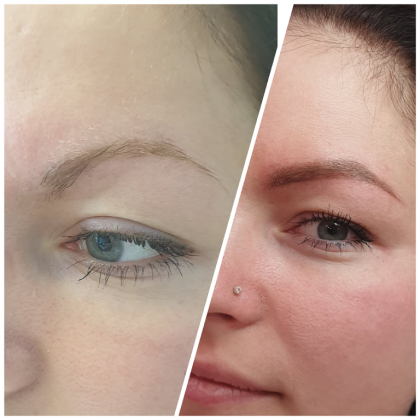
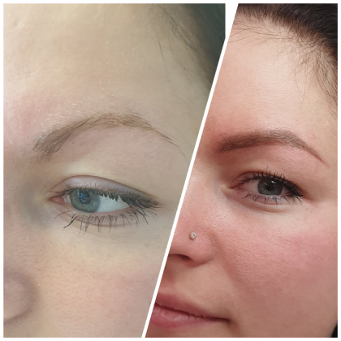
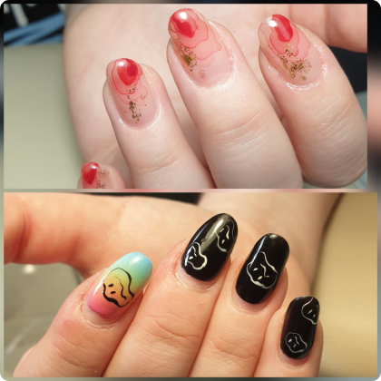
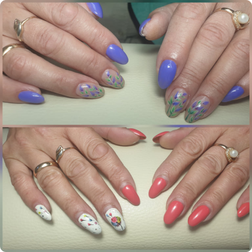
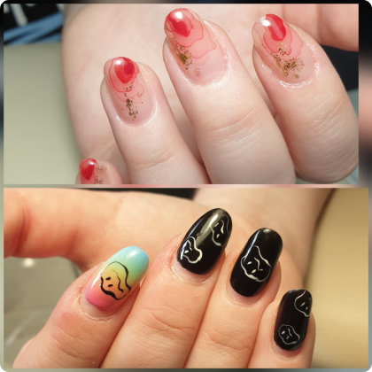
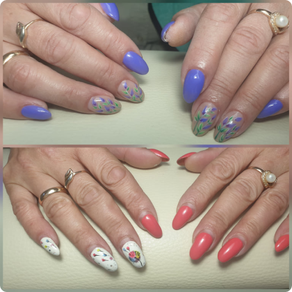
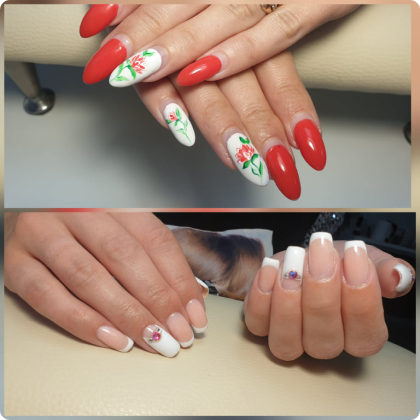
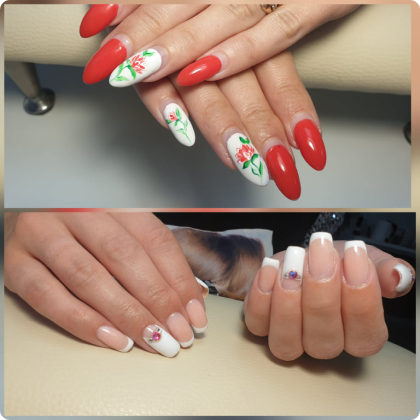

Kā darbojās zobu balinošais gels?
Aktīvie gēla balinošie komponenti PEARLSMILE aktivizējās
pateicoties LED lampas baltai gaismai uz izbalina organiskās
pigmentējošās vielas zobu emaljā. Gēls neietekmē skābes balansu un
ne notiek dentas dehidratācija. Lampas aukstā gaisma nekairina
smaganas. Tāpēc šī procedūra ir nesāpīga un bez blakusparādībām.
Vai procedūrai ir kontrindikācijas?
Pētījumi pierādīja, ka kosmētiskā zobu balināšana ir pilnīgi droša
procedūra. Tomēr no ētiskās normas puses, veikt zobu balināšanas
procedūru nav rekomendēts grūtniecēm un ar krūti barojošam
māmiņām. Arī vērts uzsvērt ,ka procedūras laikā nekādas sliktas
iedarbības uz mākslīgajiem zobiem nav.
Uz ko ir vērts pievērst uzmanību pēc procedūras veikšanas?
Gēla iedarbība turpinās divu stundu laikā pēc procedūras
veikšanas. Šajā laika posma nav rekomendēts - smēķēt, ēst uz
dzert(izņemot ūdeni).Ka arī nākamās divas dienas pēc procedūras
izvairīties lietot pārtikā produktus, kas provocē zobu
pigmentāciju.
Cik bieži var atkārtot procedūru?
Kosmētiskai zobu balināšanai ierobežojumu nav laika intervāla
starp procedūrām. Jūs varat pastāvīgi būt ar sniegbaltu smaidu,
izmantojot šo procedūru jebkurā Jums nozīmīgajā momenta,
neatkarīgi vai tās ir kāzas, randiņš, vai arī darba intervija.
Cik ilgu laiku saglabāsies rezultāts?
Zobu balināšanas rezultāts ilgst 3 – 6 mēnešus. Galvenokārt tas
atkarīgs no Jūsu dzīvesveida. Lai rezultāts turētos ilgāku laiku
rekomendēts atturēties no smēķēšanas uz izmantot pērļu zobu pudru
PEARSMILE no rīta un vakara.
Kontrindikācijas:
• Grūtniecība.
• Krūts barošanas laikā.
• Herpess.
• Dermatoveneroloģiskās saslimšanas paasinājuma stadijā
(ekzema,akne,psoriāze).
• Dzimumzīmes matiņu epilācijas vēlamajā vietā.
• Vitiligo.
• Infekcijas vai saukstēšanas slimības.
• Cukura diabēts.
• Asins slimības.
• Vēnu varikoze.
• Onkoloģiskas slimības.
• Ādas virsslāņa bojājumi (skrāpējumi,apdegumi,sakasīta
ādā,abscesi,un citi) epilācijas ievēlētājās vietās.
• Psihiskās saslimšanas un psihomotoriskais uzbudinājums (“gaismas
epilepsija”).
• Antibiotiku lietošana ne mazāk ka 14 dienas līdz lāzerepilācijas
procedūrai.
No kāda vecuma var pieteikties veikt šo procedūru?
Vecuma ierobežojumu nav, bet nav ieteicams to veikt bērniem.
Pusaudžu pubertātes periodā (12.g – 16.g ) meitenēm un puišiem
aktīvi aug matiņi (cieti un pušķveidīgi ).Tāpēc pusaudžiem, lai
likvidētu matiņus ar lāzerepilācijas procedūru būs jāveic biežāk
un ar neilgiem laika intervāliem. Kas skar vecāka gājuma cilvēkus,
tad viņiem matu apmatojums ir gaišāks, tāpēc lāzerepilācijas
procedūras rezultāts būs tik labi efektīgs.
Cik procedūru ir vajadzīgs un no kā tas atkarīgs?
Vēlamo rezultātu Jūs iegūsiet pēc 4 – 6 procedūrām. Tas ir
nosacīts skaits, viss kurss var sastāvat no 10 un pat līdz 15
reizēm. Viss atkarīgs no lāzerepilācijas izvēlētās zonas. Pilns
lāzerepilācijas kurss ķermenim sastāv no 6 – 8 reizēm,sejai līdz
10 – 12. Starp procedūrām ir jāievēro 4 – 6 nedēļu laika
intervālu.
Vai lāzerepilācija ir kaitīga?
Nē. Procedūra ir pilnībā droša, ja tiek veikta pareizi. Gaismas
viļņi neiekļūst dziļāk nekā zemādas tauku slāņos ,tāpēc tā nevar
ietekmēt iekšējos orgānus. Lāzera izstarojumi nekaitē ādai.
Vai drīkst apmeklēt pirti pēc epilācijas?
Nē. Minimāli uz 3 – 4 dienam ir jāatsakās no pirts un saunas
apmeklējumiem. Pēc procedūras āda ir jūtīga jebkuriem
kairinājumiem un tvaicēšana var paildzināt sadzīšanas laiku. Bet
ja paplacinātajās porās iekļūs netīrumi kopā ar likvidētā matiņa
paliekām ,tas var izraisīt iekaisumu. Mazo, sarkano pumpiņu
rašanās var sagādāt Jums diskomforta sajūtu, tāpēc labāk nogaidīt
un uz pirti aiziet vēlāk.
Vai var sauļoties vai apmeklēt solāriju pēc epilācijas?
Nē. Atturaties no saules staru iedarbības minimum 7 – 14 dienas
pēc procedūras.
Ārstu onkologu atsauksmes.
Sievietes baidās apmeklēt lāzerepilāciju procedūras, jo tās ir it
kā saistītas ar onkoloģiskajam saslimšanām. Ārsti onkoloģi neredz
nekādu draudu procedūras veikšanai, jā tā tiek veikta ar
sertificētu aparatūru. Iespēja saņemt ultravioleto staru
izstarojumu ir daudz lielāka sauļojoties saulē bez
aizsarglīdzekļiem. Procedūras laikā lāzera zibspuldzes ir ļoti
īsas un ātras. Stari skar tikai virsādas slāni, neietekmējot
dziļākos audus un orgānus.
Kas notiks ar uzacīm,vai tās vajag noskūt pilnībā un izraustīt?
Skūt uzacis nekāda gadījuma nevajag un izraustīt arī nevajag.
Speciālists koriģēs formu un izraustīs tikai tos matiņus , kur tie
traucēs jaunās, pareizās formas izveidei, kuru vēlāk Jūs pašas
varēsiet uzturēt.
Vai matiņi pārstās augt tatuāžas vietā?
Krāsas pigments tiek ievadīts ādas raga slānī,matiņu saknes
atrodas daudz dziļākā slānī ,tādā veidā matiņa sakne netiks bojāta
un neizkritīs.
Kāda gadalaika labāk taisīt tatuāžu?
Tatuāža ir tāda procedūra ,kuru var veikt jebkurā gadalaikā, kad
vien Jums būs ērtāk.
Kāpēc nedrīkst taisīt tatuāžu laktācijas laikā?
Laktācijas periods ir nosacīti kontrindificēts šai procedūras
izpildei, jo hormonālā fona izmaiņu dēļ pigmenta iedarbība var būt
neefektīva.
Cik bieži ir jānoņem pieaudzētie nagi,lai ļaut naturālajiem nagiem
“paelpot”?
Lieta tāda, ka nagi ir ragveida veidojumi ar plastisku virsmu. Tie
nav spējīgi “elpot”, iztvaicēt mitrumu, nagi neprasa ēdienu vai
atpūtu. “Dzīvs’’ ir tikai matrikss (naga sirds), tas piesātinās ar
skābekli pateicoties asinsritei. Pati naga virsma, ko mēs lietojam
priekš pieaudzēšanas ir mirušā keratīna kārta. Nagus ir jānoņem
tikai tad,kad izlemsiet ka ilgstošu laiku gribēsiet tos
nepieaudzēt.
Vai nagu pieaudzēšana ir kaitīga?
Diemžēl, tāpat ka arī daudzās citās nozarēs, sastopas
nekvalificēti speciālisti. Cilvēkiem ,kuriem pat nav ne jausmas ,
kas vispār ir nagi, bez pienācīgas izglītības un pieredzes,
dažreiz tie kuri apmācās paši,tie kuri vienkārši ekonomēja naudu
apmācībām,materiāliem un t.t .Ar to pašu nezinot par pareizās nagu
kopšanas tehnoloģijas , var sabojāt Jūsu nagus un attieksmi par
nagu pieaudzēšanu.
Kāpēc korekcija ir jāveic ik pēc 3 nedēļām?
Uz pieaudzētiem nagiem ir zonas ,kuras ir pakļautas, sitienu vai
aizķeršanas,vai traumas laikā,naga lūšanai. Šo zonu sauc par -
stresa zonu. Lai nags nesalūztu , īpaši nostiprina stresa zonu,
tas ļauj nagiem būt izturīgākiem un stiprākiem. Ne maz svarīgi,lai
nagi izskatītos ētiski skaistiem, tādējādi visas zonas nevar
pārklāt ar biezu materiāla slāni. Par trim nedēļa stresa zona
novirzās par 3mm,attiecīgi pazūd naga izturība. Nagi paliek daudz
trauslāki,līdz ar to palielinās iespēja to bojāt. Nerunājot par
estētisko izskatu.

 



 



 



 Daugavpils, Sakņu iela.
Daugavpils, Sakņu iela.